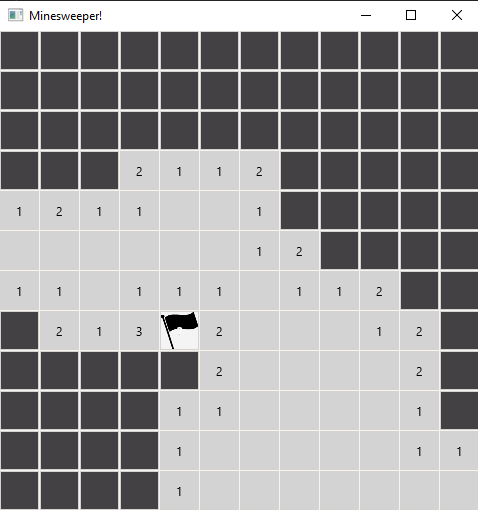
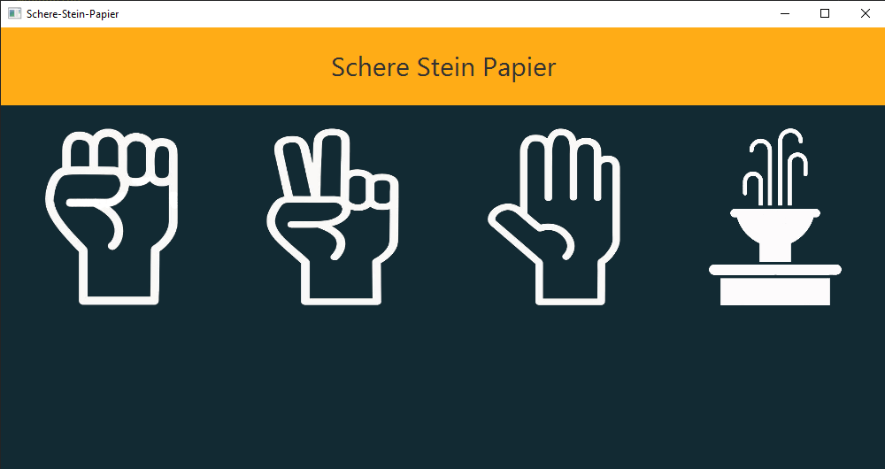

Projekt Management
Informationstechnische Projekte
3. Klasse
Pac-Man
Minesweeper
Schere Stein Papier
Quiz-Game
4. Klasse
Snake-Game
3. Klasse
Pac-Man
Minesweeper
Schere Stein Papier
Quiz-Game
4. Klasse
Snake-Game
Snake-Game
Hier wurde das Retro-Spiel Snake entwickelt.
Das Spiel wurde in Teams von zwei bis drei Leuten programmiert.
Spielregeln:
Bei dem Spiel Snake muss eine Schlange Futterhappen aufsammeln, um länger zu werden. Nach jedem Happen wird die Schlange um einen Block länger. Kollidiert die Schlange mit einem Hindernis oder dem Spielfeldrand, wird das Spiel beendet. Ziel des Spiels ist es, alle Futterhappen aufzusammeln, sodass die Schlange das ganze Spielfeld ausfüllt.
Das Spiel wurde in Teams von zwei bis drei Leuten programmiert.
Spielregeln:
Bei dem Spiel Snake muss eine Schlange Futterhappen aufsammeln, um länger zu werden. Nach jedem Happen wird die Schlange um einen Block länger. Kollidiert die Schlange mit einem Hindernis oder dem Spielfeldrand, wird das Spiel beendet. Ziel des Spiels ist es, alle Futterhappen aufzusammeln, sodass die Schlange das ganze Spielfeld ausfüllt.
Pac-Man
Ein weiterer Klassiker aus der Videospielgeschichte.
Die meisten werden den gelben, mampfenden Charakter bereits aus ihrer Kindheit kennen.
Spielregeln:
Pac-Man wird mit den Pfeiltasten gesteuert. Sein Ziel ist es, alle gelben Punkte einzusammeln, ohne dass er dabei von einem der Geister berührt wird.
Pac-Man kann außerdem Power-Ups essen. Hat er ein Power-Up erwischt, kann er die Geister berühren, ohne dass sie ihm Schaden zufügen.
Die meisten werden den gelben, mampfenden Charakter bereits aus ihrer Kindheit kennen.
Spielregeln:
Pac-Man wird mit den Pfeiltasten gesteuert. Sein Ziel ist es, alle gelben Punkte einzusammeln, ohne dass er dabei von einem der Geister berührt wird.
Pac-Man kann außerdem Power-Ups essen. Hat er ein Power-Up erwischt, kann er die Geister berühren, ohne dass sie ihm Schaden zufügen.
Minesweeper

Einige werden auch dieses Urgestein der Videospielgeschichte wiedererkennen.
Dieses Projekt wurde in Einzelarbeit umgesetzt.
Spielregeln:
Bei dem Spiel Minesweeper muss man alle Felder aufdecken, die keine Mienen besitzen. Die Felder können Zahlen beinhalten, welche repräsentieren, wie viele Mienen sich in ihrer Umgebung befinden. Felder, die keine Miene enthalten, kann man mit Rechtsklick markieren, um sich leichter zu merken, wo sich Mienen befinden. Hat der Spieler alle Felder ohne Miene geklickt, hat er gewonnen.
Dieses Projekt wurde in Einzelarbeit umgesetzt.
Spielregeln:
Bei dem Spiel Minesweeper muss man alle Felder aufdecken, die keine Mienen besitzen. Die Felder können Zahlen beinhalten, welche repräsentieren, wie viele Mienen sich in ihrer Umgebung befinden. Felder, die keine Miene enthalten, kann man mit Rechtsklick markieren, um sich leichter zu merken, wo sich Mienen befinden. Hat der Spieler alle Felder ohne Miene geklickt, hat er gewonnen.
Quiz-Spiel
Dieses Quiz-Spiel wurde in Anlehnung an das beliebte Unterrichtsspiel "Kahoot"
erstellt. In einer Gruppe von vier Personen wurde dieses Spiel programmiert.
Der Button "Quiz Editor" führt zu einem Menü, in dem man Quizze erstellen, bearbeiten und löschen kann.
Mit einem Klick auf den "Play" Button wird man ins Hauptmenü weitergeleitet, in dem man einige Optionen hat.

Der Button "Quiz Editor" führt zu einem Menü, in dem man Quizze erstellen, bearbeiten und löschen kann.
Mit einem Klick auf den "Play" Button wird man ins Hauptmenü weitergeleitet, in dem man einige Optionen hat.
Im Hauptmenü kann man einige Informationen finden:
Wenn man ein Quiz ausgewählt hat, kann man mit einem Klick auf Play das Quiz-Spiel starten.
- Eine Übersicht über alle spielbaren Quizze
- Die besten Spieler, wenn man ein Quiz auswählt
- Die Spieler mit den meisten Punkten insgesamt
Wenn man ein Quiz ausgewählt hat, kann man mit einem Klick auf Play das Quiz-Spiel starten.
So sieht die Spieloberfläche des Quizzes aus.
Man sieht im oberen Bereich die Zeit, die der Spieler für das Beantworten der Frage noch übrig hat.
Außerdem sieht man hier die aktuellen Punkte des Spielers und die aktuelle Frage auf dem ausgegrauten Hintergrund.
Sehen wir uns einmal an, was bei einem Klick auf die Antwortmöglichkeiten passiert:
Man sieht im oberen Bereich die Zeit, die der Spieler für das Beantworten der Frage noch übrig hat.
Außerdem sieht man hier die aktuellen Punkte des Spielers und die aktuelle Frage auf dem ausgegrauten Hintergrund.
Sehen wir uns einmal an, was bei einem Klick auf die Antwortmöglichkeiten passiert:
Die Antwort wurde überprüft und im linken, mittleren Bereich wird sie als richtig
oder falsch gekennzeichnet.
Außerdem ändern sich die Farben der Antwortmöglichkeiten auf Rot (für falsch) und Grün (für Richtig).
Schauen wir mal, was passiert, wenn das Spiel zu Ende gespielt wird:
Außerdem ändern sich die Farben der Antwortmöglichkeiten auf Rot (für falsch) und Grün (für Richtig).
Schauen wir mal, was passiert, wenn das Spiel zu Ende gespielt wird:
Alle Punkte des Spielers wurden zusammengezählt!
Jetzt der Spieler noch einen Namen für sich festlegen, der dann in den Highscore-Tabellen des Hauptmenüs angezeigt wird.
Mit einem Klick auf OK links unten gelangt man zurück ins Hauptmenü.
Jetzt der Spieler noch einen Namen für sich festlegen, der dann in den Highscore-Tabellen des Hauptmenüs angezeigt wird.
Mit einem Klick auf OK links unten gelangt man zurück ins Hauptmenü.

Schere Stein Papier
Dieses Spiel wurde bereits letztes Jahr am Tag der offenen Tür der HTL Steyr
präsentiert und darf heuer auch nicht fehlen.
Das überall bekannte Langeweile-Spiel "Schere Stein Papier" wurde in zweier Teams entwickelt.
Egal ob Schere Stein Papier, Schnick Schnack Schnuck oder Ching Chang Chong, die Spielregeln sind jedem bekannt.
Das überall bekannte Langeweile-Spiel "Schere Stein Papier" wurde in zweier Teams entwickelt.
Egal ob Schere Stein Papier, Schnick Schnack Schnuck oder Ching Chang Chong, die Spielregeln sind jedem bekannt.
